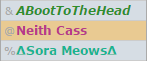
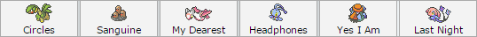
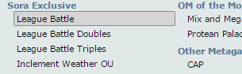
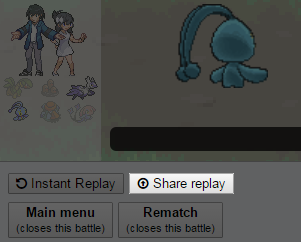
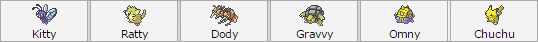
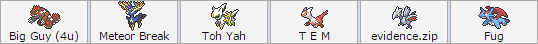

A guide on how to challenge the Sora League.
First of all, register your team of 6 to a member of the Admin Team. Admin Team names are highlighted in the userlist, as shown in the image below.
If you don't know what registering means, don't worry; just PM an Admin Team member, and they'll gladly help you out from there.

These six Pokémon are to remain the same throughout most of your challenge. This lock only applies on species and form, however.
You're allowed to change EVs, movesets, and nicknames, and there won't be an issue with your challenge.
Changing your team of 6 is allowed, but you forfeit all the badges you acquired up to that point.

Leaders And Elite 4s are challenged using the League Battle format. This format differs from standard OU in that Monotype unbans are
lifted for Leaders. This allows Leaders to hold their ground against Monotype bans, which are also lifted for the Challenger, but not the Leader.
If you need information regarding a League member, you can always use the following commands in the server: /[name] or /[type] (e.g. /revan).

After winning a league battle, remember to click Save Replay. This is crucial, as you need to show a link to the replay to a member of the
Admin Team. Doing so will earn you server bucks (currencies) depending on the rank of the member you defeated, as well as add up to your
overall badge count. Defeating one Gym Leader earns you one badge, so keep this in mind. Don't worry about doing anything if you lose,
as your opponent will take care of everything. However, you cannot challenge the same league member for a whole 24 hours.

Upon collecting 8 Gym Badges, a challenger can move on to challenge the Frontiers. Defeating a Frontier earns you a Frontier Symbol.
2 Frontier Symbols are needed to move on to the Elite Four, while 4 Frontier Symbols are required to move on to the Elite Frontiers.
All 4 Frontier Symbols and 2 Elite Frontier symbols are required to challenge the Frontier Head. If one loses to the second Elite Frontier they
challenge or the Frontier Head, the challenger must forfeit one Frontier Symbol and one Elite Frontier symbol. During the Frontier stage of
the challenge, challengers are not locked to any single team, and are free to change teams to adhere to the rulesets.

Challengers have to defeat all Elite 4 members consecutively, without fail. Suffering defeat in the hands of an Elite 4 member resets your Elite 4
run, and you have to try again from the first Elite 4. There is no set order in which the Elite 4s need to be challenged, though. You're allowed
to register a new team at any point in your E4 challenge, but doing so forfeits all your E4 wins thus far.
Defeating all 4 Elite 4 members allows challengers to battle the Soran Champion, as well as granting them the Voice (+) rank. Losing to
one means you have to rebattle the Elite 4 again. However, there is no set order in which you have to battle the Champions. During the
Champions stage of the challenge, challengers are not locked to any single team, and are free to change teams to adhere to the rulesets.

To enter the Hall of Fame, challengers must defeat both Champions and the Frontier Head, though there is no specific order in which this needs to be done.